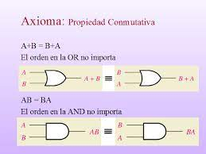
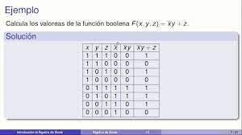

INTRODUCCION AL ALGEBRA DE BOOLE
Definición 1:
Las reglas de reemplazo en el capítulo anterior, permitieron reducir proposiciones lógicas complejas a otras más simples, tanto que, una proposición con varias variables se lograron reducir a un par de ellas
Definición 2:
Desde la lógica de conjuntos, se puede decir que se agrupan y pueden simplificarse a funciones más simples pero equivalentes a la original. Aquellos conjuntos que son descritos a través de lógica proposicional y sus tablas de verdad, pueden simplificarse no perdiendo su contenido. las reglas de reemplazo estudiadas ejemplificaron este concepto, ahora la simplificación de argumentos lógicos a más sencillos se estudia más puntualmente según el álgebra de George Boole.
|
|
|
|---|---|
|  |  |